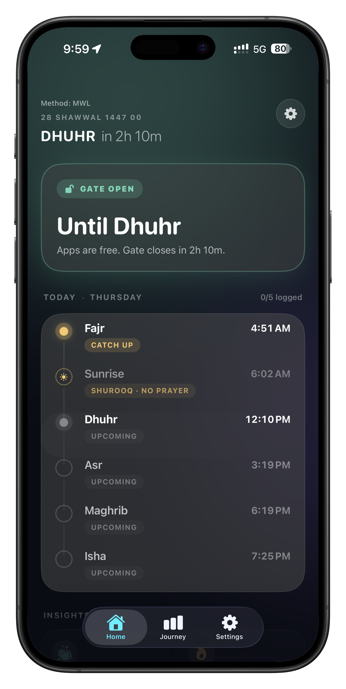
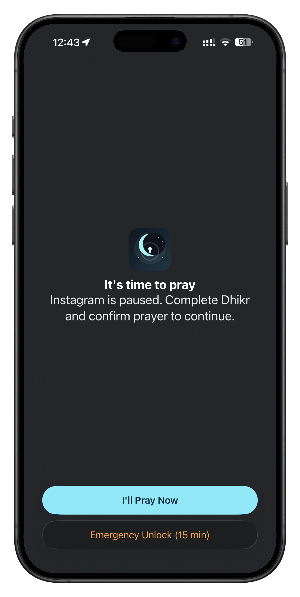
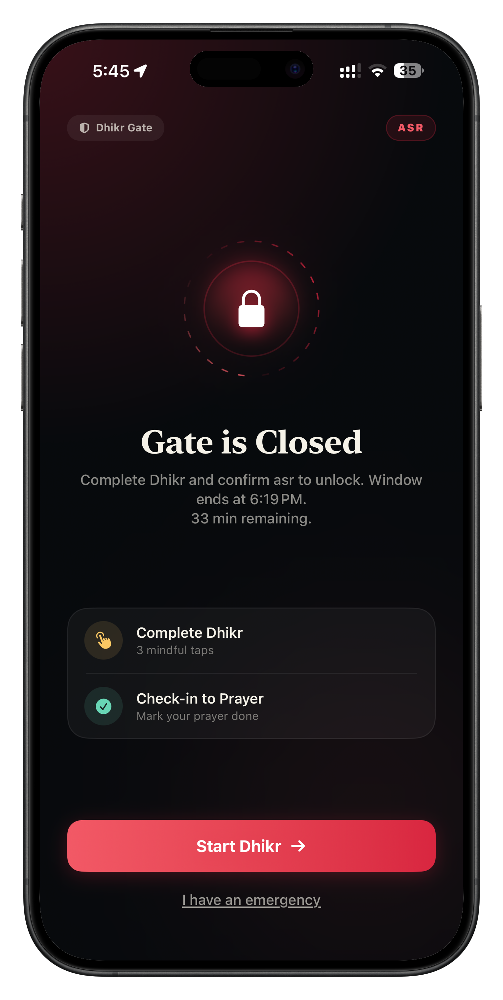
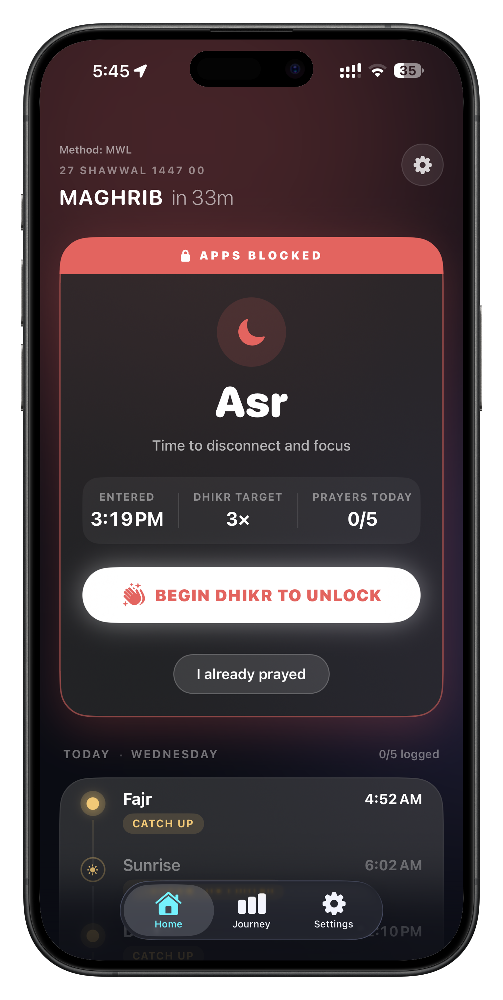

Stay aware of the next prayer window.
The app keeps your schedule visible, so your day bends around salah instead of the other way around.
Silence the digital noise. Dhikr Gate creates a sacred window around every prayer, helping you stay grounded in what matters most.

Scroll through the sequence. Dhikr Gate steps in before distraction does, turns interruption into intention, and returns you to your day with more awareness.
The app keeps your schedule visible, so your day bends around salah instead of the other way around.
Social feeds and distractions are blocked at the right moment, with one clear prompt to return to prayer.
Access opens back up only after a short guided act of remembrance, shifting the interaction from reflex to intention.
Prayer windows, dhikr sessions, and steady follow-through become part of a visible, encouraging journey.



Distractions don't stand a chance. Dhikr Gate automatically pauses noisy apps during prayer windows, allowing you to disconnect without effort.
No more mindless scrolling. To regain access, complete a short, guided dhikr session. Transform impulse into remembrance.
Track your spiritual consistency. See your daily progress and witness how small acts of dhikr build into a lifetime of discipline.
Dhikr Gate never tracks your location or scrolls your data. All prayer times and dhikr logs stay exactly where they belong: on your device.
Start immediately. No signups, no emails, no friction.
Your spiritual routine is nobody's business but your own.
Purely focused on your growth, not data collection.